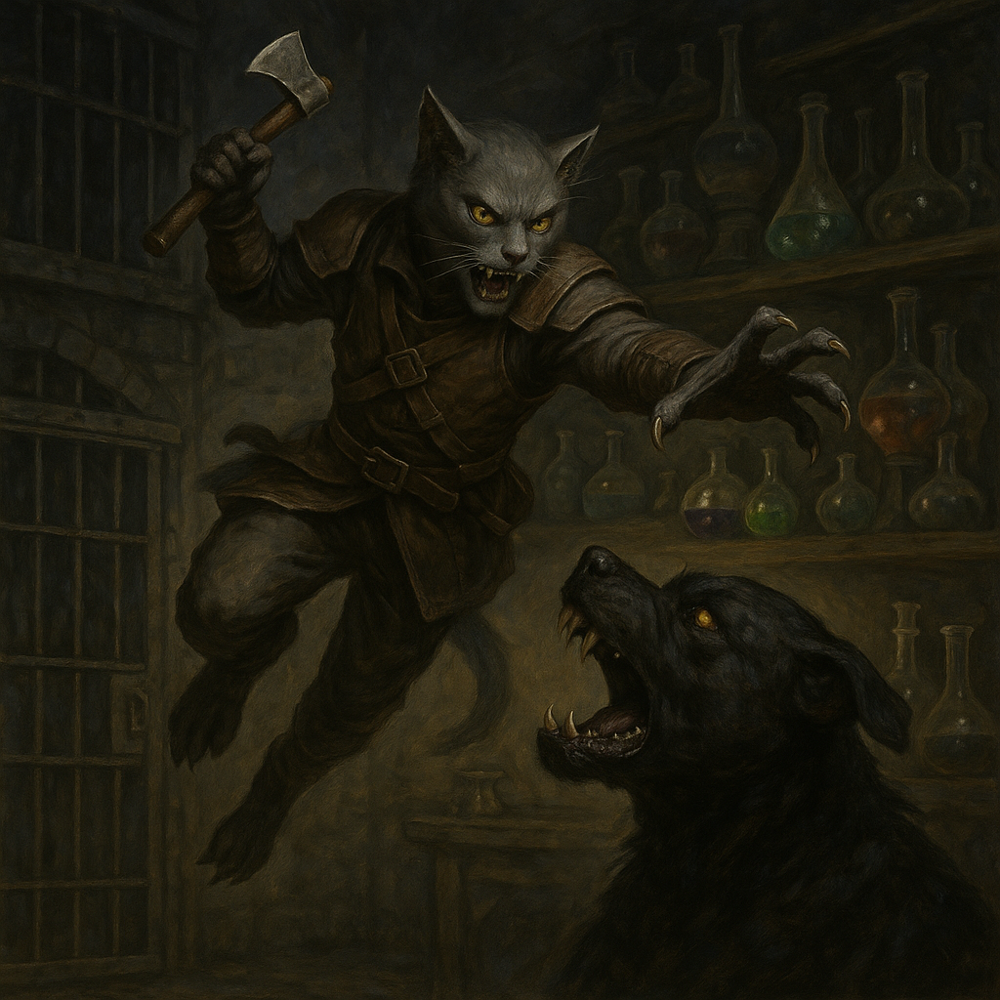
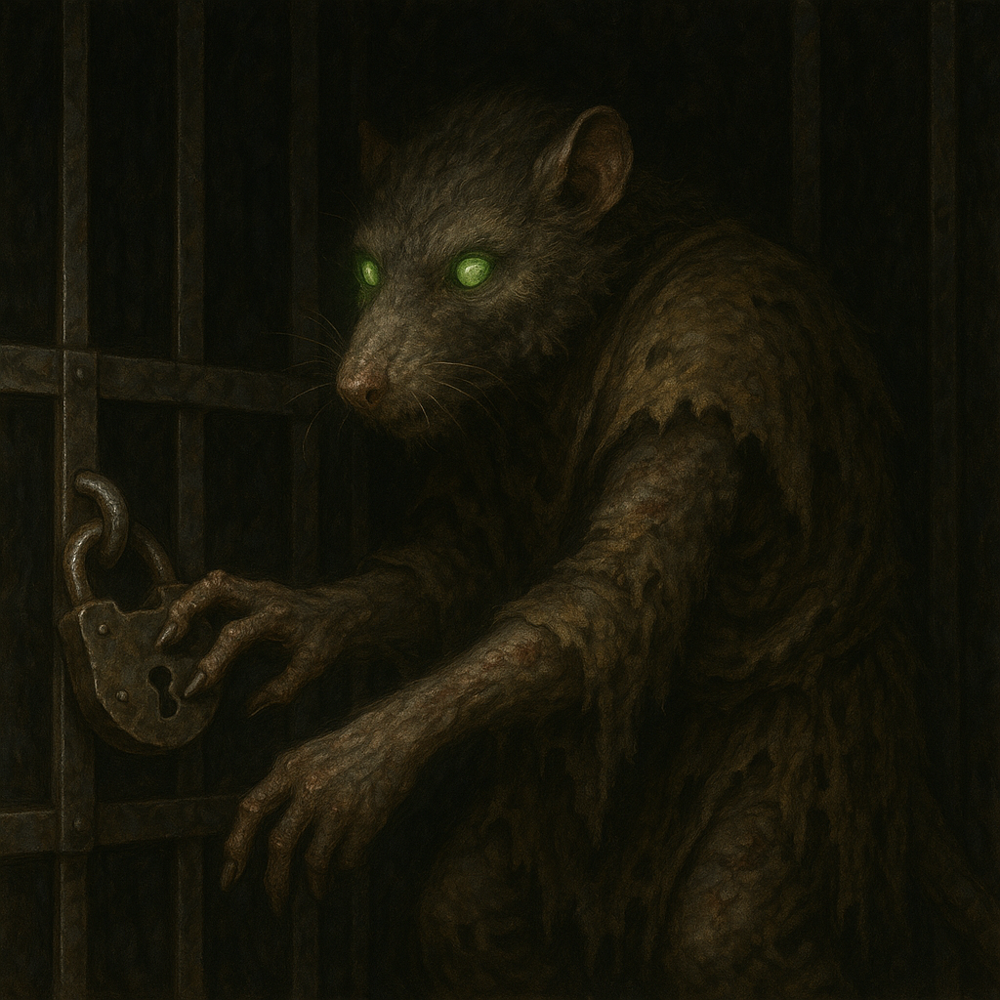
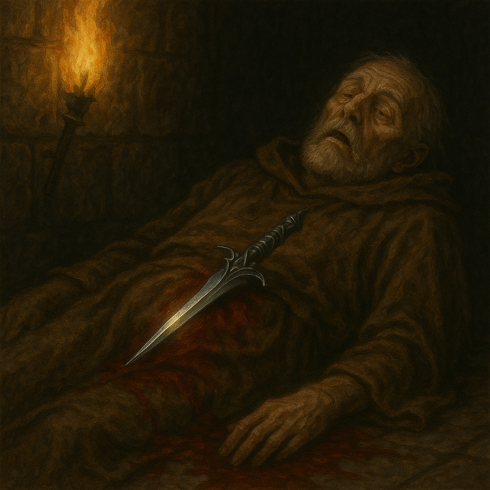
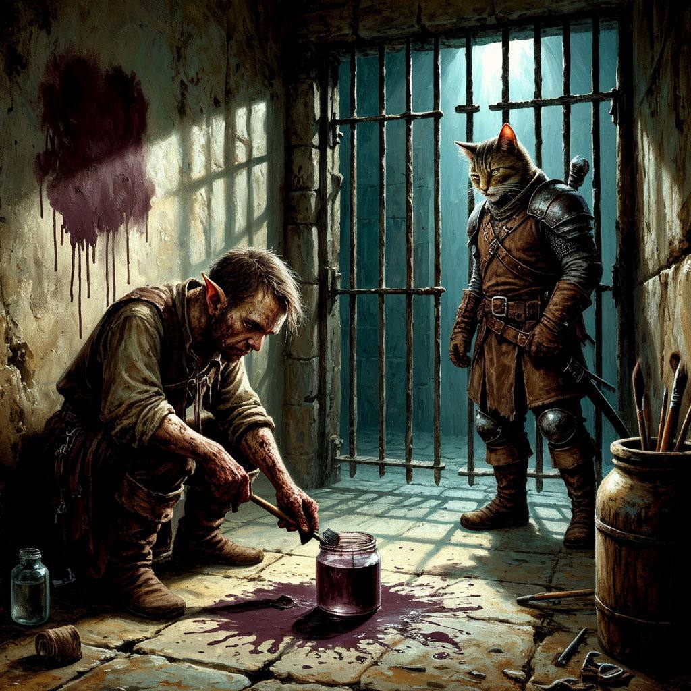
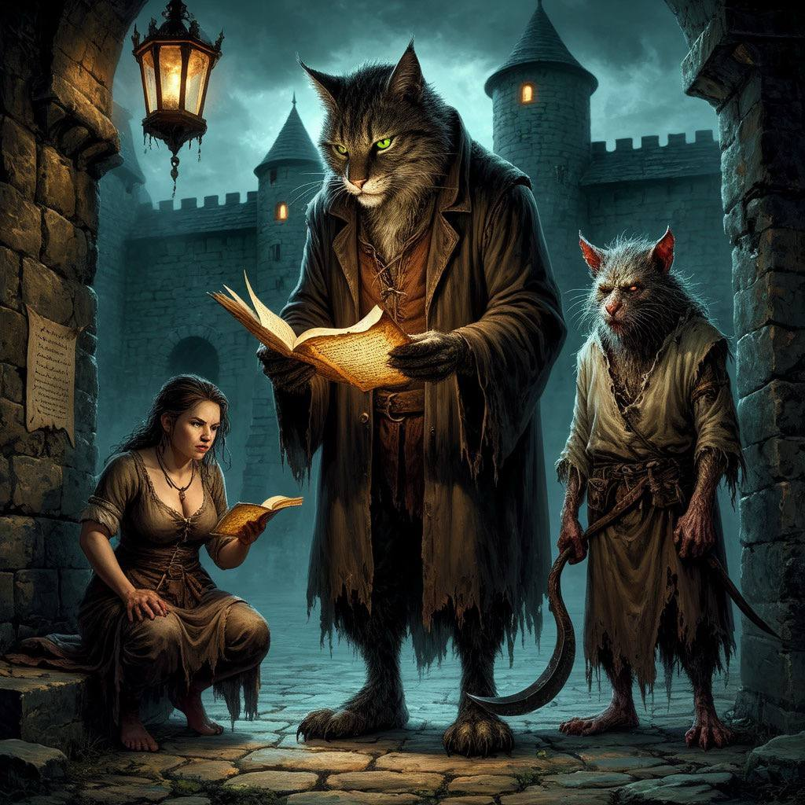

Сессия 1
TBD...
Сессия 2
1. Тень алхимика и тайна крысолюда
После того как последний голем рассыпался в груду камней, часть искателей застыла в оцепенении, будто скованная невидимыми цепями. Только Мох, табакси с горящими в темноте глазами, и Хельга, дворфиха с тяжелым топором в руках, продолжили путь вниз, в зияющий провал подземелья.
Там, в затхлой полутьме, их встретило помещение, больше напоминающее лабораторию безумного алхимика: склянки с мутными жидкостями, заржавевшие реторты, клети, пропитанные запахом страха и крови. Среди всего этого выделялся тощий, ощетинившийся пёс с горящими жёлтыми глазами.
Мох не дал ему даже зарычать — одним стремительным прыжком он вспорол глотку твари. Пес захрипел, захлебнулся кровью и рухнул на каменный пол.
В тот же миг раздался лязг металла.
Из тени клетки, где до этого сидел сгорбившийся Крысолюд, протянулась узкая лапа с длинными когтями. Существо нащупало замок, проворно щелкнуло механизмом — и дверца со скрипом распахнулась.
Он вышел.
Мох на мгновение замер, почувствовав, как шерсть на его загривке встала дыбом. Крысолюд представлял собой жуткое зрелище: нечто среднее между человеком и крысой, с дрожащими усами и глазами-бусинами, полными странной смеси страха и ненависти.
Он прошипел, что это его дом, а убитая собака принадлежала ему. Его голос звучал как скрежет ржавых шестерёнок.
Мох медленно облизал кровавые когти, не отводя холодного взгляда от Крысолюда. Табакси уловил в его словах не только злобу, но и что-то еще — почти человеческую горечь.
Крысолюд рассказал историю, от которой кровь стыла в жилах: его отец, алхимик, скрестил себя с крысой в безумном эксперименте. Мать — та самая крыса — была сожрана кошкой, и с тех пор он панически боялся этих созданий. Именно поэтому он впал в ступор, увидев Моха — кошачьего оборотня.
Но самое странное было впереди.
Крысолюд знал, что его отец ушел три дня назад — через дверь, запечатанную магией. Никто из группы не смог справиться с чарами, и тогда Хельга просто проломила стену. За ней оказался коридор-двойник, ведущий к телу алхимика.
Он лежал в луже засохшей крови, с кинжалом в животе. Лезвие было тонким, изысканным — дарк-эльфийским. Крысолюд видел того эльфа: он приходил к отцу, о чём-то шептался… но что именно — оставалось загадкой.
Разграбив лабораторию, группа выбралась через подвал местного торговца — Жоры Крыжовникова. Мох, не моргнув глазом, прихватил по дороге пару банок солений — на удачу.
2. Тюремный художник и его необычные краски
Сквозь решетку тюремной камеры пробивался тусклый свет факела, выхватывая из полумрака странные фрески на стенах.Жора Крыжовников, одетый в грязную холщовую робу, с азартом наносил очередной мазок на каменную поверхность. Его кисть, сделанная из собственных волос, оставляла за собой коричневатый след.
Он воскликнул, что посетители пришли оценить его новую серию под названием "Тюремные впечатления", где все материалы были местного производства.
Мох, морща чувствительный нос, отступил от решетки и спросил о деловых отношениях Жоры с алхимиком.
Тот на мгновение оторвался от работы, оставив кисть в банке с подозрительной жидкостью, и заявил, что алхимик был его поставщиком красок. Они сотрудничали много лет: алхимик — гений химии, а он — гений искусства.
Хельга скептически осмотрела "картину", смутно напоминавшую закат, и спросила, действительно ли он покупал у алхимика только натуральные пигменты.
Жора с горящими глазами подтвердил, что использовал исключительно органику, а зелья алхимика придавали его краскам невероятную стойкость и уникальные оттенки. Он добавил, что рецептура тех зелий была не совсем стандартной, но разве истинное искусство должно ограничиваться условностями?
Крысолюд неожиданно спросил, были ли у алхимика другие покупатели.
Жора презрительно фыркнул, заявив, что никто больше не мог оценить такое совершенство. Однако он вспомнил, что в последний раз алхимик казался взволнованным и говорил о "большом заказе", но отказался объяснять подробности.
Когда стражники начали подгонять посетителей к выходу, последнее, что они услышали, были возмущённые крики Жоры о "цензуре" и "преследовании гениев".
3. Темный договор
Пергамент, испещрённый угловатыми нечеловеческими буквами, хрустел в лапах Моха. Чернила отливали ядовито-фиолетовым, оставляя на краях бумаги едкие пятна.
Табакси зачитал вслух записку:
"Алхимик.
мне нужны:
- 12 флаконов теневой невидимости (трехчасовое действие)
- 6 ампул 'Шепот Морны' (смерть без звука)
Доставь к старому маяку до заката. Спрячь в колодец за руинами.
Если опоздаешь — найду сам. И тебе не понравится, как я это сделаю."